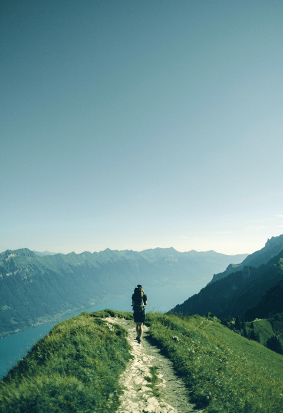

Account
A HIKING GUIDE
Be prepared for the Mountains and beyond!
scroll down


01
GET STARTED
What level of hiker are you?
Determining what level of hiker you are can be an important tool when planning future hikes. This hiking level guide
will help you plan hikes according to different hike ratings set by various websites like All Trails and Modern Hiker.
What type of hiker are you – novice, moderate, advanced moderate, expert, or expert backpacker?
